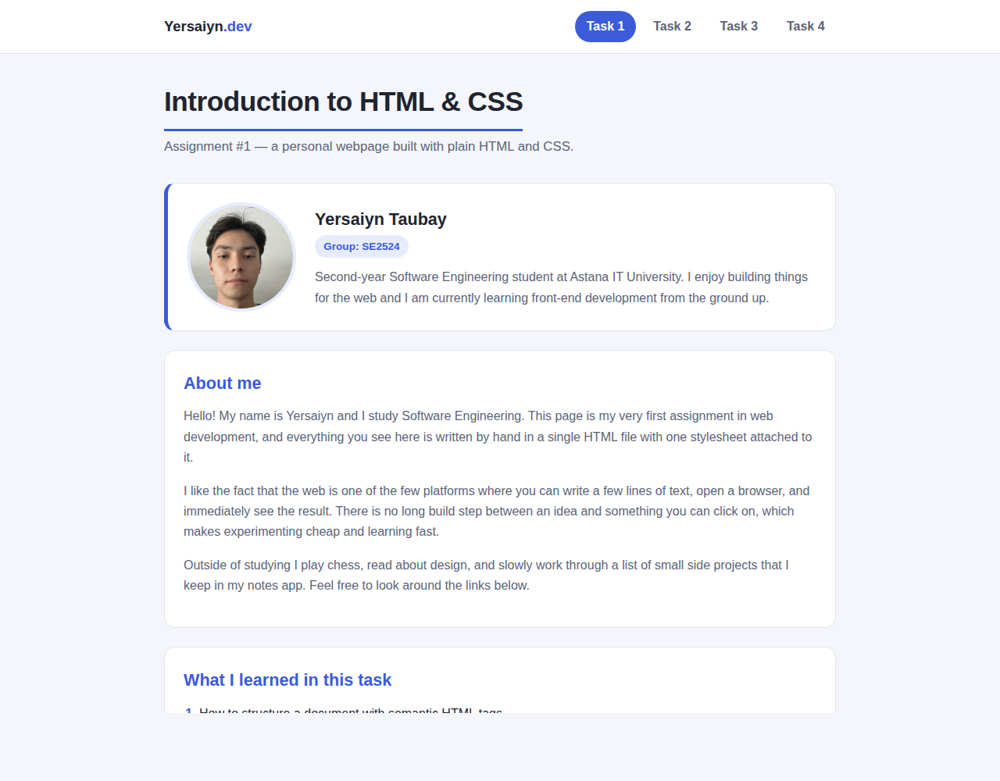
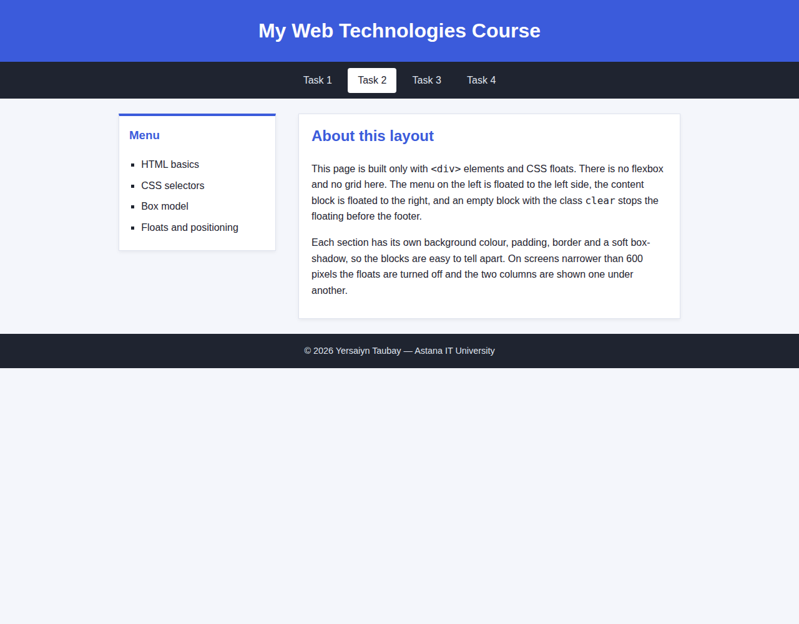
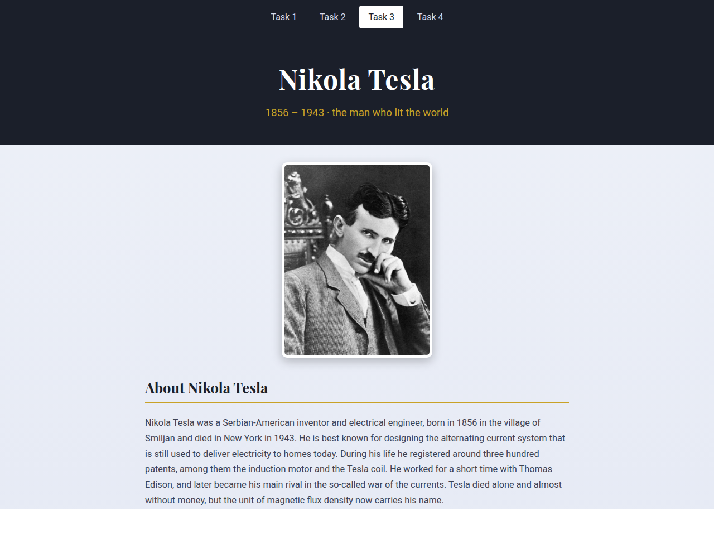
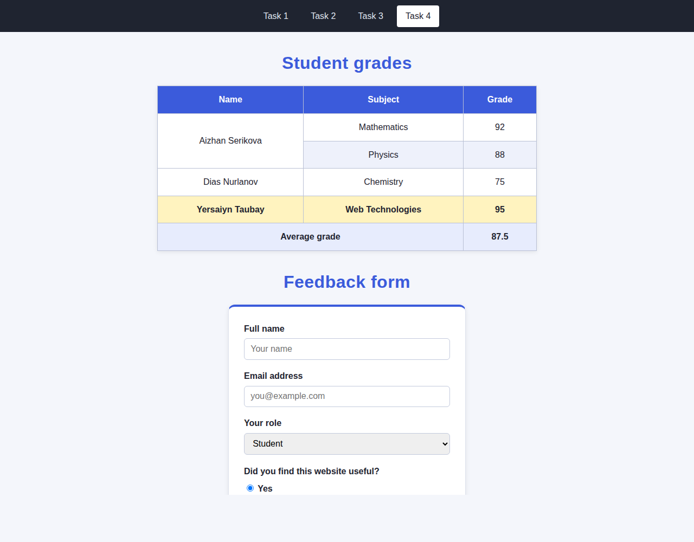

The project contains four webpages, one for each task of the assignment. All pages share a navigation bar so the tasks can be reached from any page. The site is written in plain HTML and CSS without any framework or JavaScript, and it is published on Netlify.
| File | Task | What it demonstrates |
|---|---|---|
index.html + styles.css | Task 1 | Personal page, profile card, lists, image, links, three selector types |
task2.html + task2.css | Task 2 | Two-column layout built only with div and float |
exercise1/index.html + exercise1/styles.css | Task 3 | Tribute page, two Google Fonts, styled image and button |
task4.html + task4.css | Task 4 | Styled table with merged cells and a styled feedback form |
A personal page with a heading, three paragraphs, an ordered list of five
items, unordered lists, a portrait image with an alt attribute
and several links. A profile card shows the photo, name, group and a short
description.
body sets the background colour, font family and size..card adds padding, border and rounded corners.#page-title underlines the main heading.border-radius: 50%, object-fit: cover and a fixed size.a:hover changes link colour and adds an underline.
The page is divided into a header, a navigation bar with four links, a
sidebar, a main content block and a footer. The layout uses only
div elements and floats; neither flexbox nor grid appears in
task2.css.
.sidebar { float: left; width: 28%; } — the left column..aside { float: right; width: 68%; } — the right column..clear { clear: both; } — an empty block that ends the floating
so the footer stays at the bottom.box-shadow.
A tribute page about Nikola Tesla, placed in the folder
exercise1. It contains a heading, a subheading, a summary
paragraph, an ordered list of six events, an unordered list of inventions, a
portrait and three external links, one of which is styled as a button.
linear-gradient as the page background..content { max-width: 760px; margin: 0 auto; } centres the text column.max-width, border-radius,
box-shadow and a white border.list-style-type: upper-roman and square..btn link changes colour on hover.
The page shows a grade table and a feedback form. The table has three
columns and four data rows; one name cell is merged with
rowspan="2" because the student has two subjects, and the footer
merges two cells with colspan="2".
border-collapse: collapse so neighbouring cells share one border.th, borders and padding on every cell,
text centred.tbody tr:nth-child(even) gives alternating row colours.tr.highlight-row marks one row in yellow. It is written with
the element name in front so that its specificity (0,1,1) is not lower
than the nth-child rule above it.#table-heading.margin: 0 auto.border-radius: 12px on the container.#feedback-form and the class
.feedback.
While working on this assignment I practised the structure of an HTML document, the three kinds of CSS selectors and the difference in their specificity, the box model, floats and positioning, styling of tables and forms, and making a layout adapt to small screens with media queries. The project is version-controlled with Git and published online.